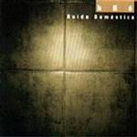

| Artist: | kRé |
| Title: | Ruido Domestico |
| Label: | Musical Mind/Prog Mind MMPG0001 |
| Length(s): | 52 minutes |
| Year(s) of release: | 2002 |
| Month of review: | [08/2003] |
| 1) | Primera Cartada | 6.39 |
| 2) | Doro | 6.29 |
| 3) | Tate Quieto | 4.30 |
| 4) | Onirica | 3.18 |
| 5) | Ruido Domestico | 6.59 |
| 6) | Ilvica | 4.09 |
| 7) | Sigiloso | 4.47 |
| 8) | Champignon | 4.36 |
| 9) | Ornamento | 10.42 |
Doro has a bit of a King Crimson feel in its building of tension. After a brief introIt starts working on theme, at times creating tension in doing so, at others moving off into Rhodes diddling and other non committal endeavours. The two come out balanced at the end.
Tate Quieto is a somewhat abstract and rather jazzy piece dominated by Rhodes and sax, failing to create either atmosphere or melody.
Onirica is led by guitar, bringing on a bit of melody, but never quite enough to convince. Okay, but no eyecatcher.
Ruido Domestica is a surprisingly electronic track, rather bleepy sounds seemingly imitating dripping water. Despite the apparent anorganic sound of the track, it sounds rather nice. As the track progresses we move into frippertronics. The combination of electronics and frippertronics is rather reminiscent of Richard Pinhas/Heldon.
Ilvico has a rather more active guitar line and is rather break oriented rhythmically. The lingering synth adds atmosphere to the track. As it progresse, electronics gain in importance, making Ilvico sound more experimental.
Sigiloso continues the breaky feeling, but is led on by sax instead of guitar. The shrillness of the sax as well as its more experimental than melodic use, makes this track less appealing.
Champignon is a bit of a happy sounding track, with rock 'n' roll drum roll and diddly guitar. On a trip to Nashville. Halfway through the speed changes and the sound becomes more atmospheric and psychedelic, mostly expressed in the guitar line.
Closer Ornamento has a quiet, still start, almost Terje Rypdal, if it weren't for the Rhodes leading into a stronger guitar. From this the track finds a middleway. Bass at times reminding of Brand X, occasional Rhodes plinks and gentle sax and mostly guitar, although there's just a tad of KC towards the end leading into turmoil, shooing away the still.